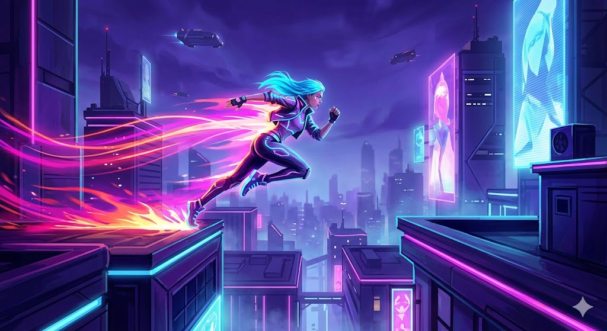
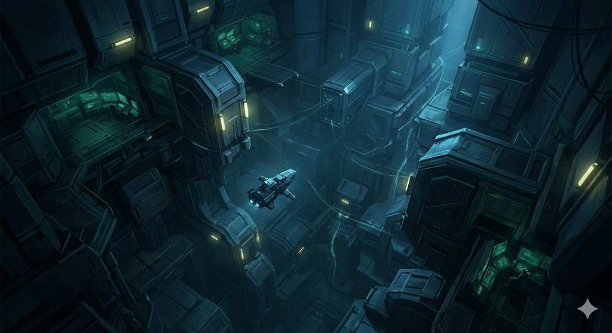

NeonRun
Plataformas / Acción
Una vista atmosférica y misteriosa del espacio profundo. Una nave de
exploración científica solitaria flota cerca de una colosal
megaestructura alienígena o un portal inactivo. La iluminación es fría
y técnica, dominada por azules profundos, verdes digitales y el
destello de energía sutil que emana del Protocolo. Transmite
inmensidad y misterio técnico

Abyssal Protocol
RPG / Ciencia ficción
Una vista atmosférica y misteriosa del espacio profundo. Una nave de
exploración científica solitaria flota cerca de una colosal
megaestructura alienígena o un portal inactivo. La iluminación es fría
y técnica, dominada por azules profundos, verdes digitales y el
destello de energía sutil que emana del Protocolo. Transmite
inmensidad y misterio técnico.